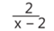
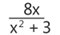
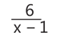

1.
Escribe V si es verdadero o F si es falso.
2.
Multiplica las siguientes fracciones algebraicas:
3.
Divide las siguientes fracciones algebraicas:
4.
Simplifica las siguientes expresiones:

5.
Un vehículo baja una pendiente y su velocidad se describe por la expresión
metros por segundo, mientras que la velocidad de un ciclista que sube la misma pendiente se describe
por la expresión

metros por segundo. ¿Cuál es la proporción entre la velocidad del vehículo y la del ciclista al
dividir la velocidad del vehículo entre la del ciclista?
6.
La resistencia de una soldadura se describe por la expresión

newtons por metro cuadrado, mientras que la resistencia de una segunda soldadura se describe por

newtons por metro cuadrado. Se quiere saber cuántas veces la resistencia de la primera soldadura es mayor
que la de
la segunda, ¿cuál sería la fracción resultante de dividir la resistencia de la primera aleación por la de
la
segunda?

Formen grupos con sus compañeros. Cada miembro deberá elaborar una exposición de un ejemplo
resuelto
en una hoja de cuaderno de la multiplicación o división de fracciones algebraicas que incluya al menos un
caso de
factorización en el numerador o en el denominador. Luego, cada integrante tomará su material y
realizará una breve presentación de su tema elegido a su compañero. Explicando la
resolución paso a
paso.